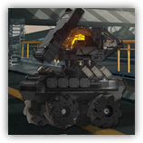

特种支援机械 THRM-EX
近战 物理；普通 构装
|  |
罗德岛特种机器人THRM-EX。被工程师可露希尔派遣来执行战地作战任务。有着非常特别的存在感，对人非常热情，这点很讨周围部分人的喜欢，也有很多人对此不能适应。不过，Thermal-EX仍然无所畏惧，今天也在这个冰冷的世界用光明的自己去温暖他人。 本质上是客制化后的雷神挑衅者熔岩猫魔鬼高性能版作业平台。由于是新型号，独特的具有侵略性的外形让人感觉到有些畏惧。 |
特种支援机械丨THRM-EX
中型构装（作战平台），守序中立
AC 12
先攻 +5（15）
HP 26（4d8+8）
速度 30尺
| 调整 | 豁免 | ||
|---|---|---|---|
| 力量 | 12 | +1 | +1 |
| 智力 | 8 | -1 | -1 |
| 调整 | 豁免 | ||
|---|---|---|---|
| 敏捷 | 16 | +3 | +5 |
| 感知 | 10 | +0 | +0 |
| 调整 | 豁免 | ||
|---|---|---|---|
| 体质 | 15 | +2 | +6 |
| 魅力 | 12 | +1 | +1 |
技能 运动+3，求生+2
抗性 火焰
免疫 毒素；魅惑，恐慌，力竭，中毒，震慑，目盲，耳聋
感官 黑暗视觉60尺，被动察觉10
语言 通用语
CR 1（XP200；PB+2）
特质 Traits
延迟引爆 Delayed Detonation（1次/日）。特种支援机械结束回合时，引爆其身上装载的热能法术冲击装置。敏捷豁免检定：DC14，源自特种支援机械10尺光环区域内每个其所选的生物。失败：14（4d6）火焰伤害，并获得 d6脆弱 直到特种支援机械下回合开始。成功：仅受半伤。
模块修复 Module Repairation。支援机械受益于修复术效应时，若其生命值不小于1，则恢复1点生命值。
稳定底盘 Stable Chassis。在对抗造成倒地状态的效应时，支援机械的体型视为大一级的体型，且所作的豁免检定具有优势。
动作 Actions
热能冲击 Heat Impact。近战攻击检定：+5，触及5尺。命中：7（1d8+3）火焰伤害。